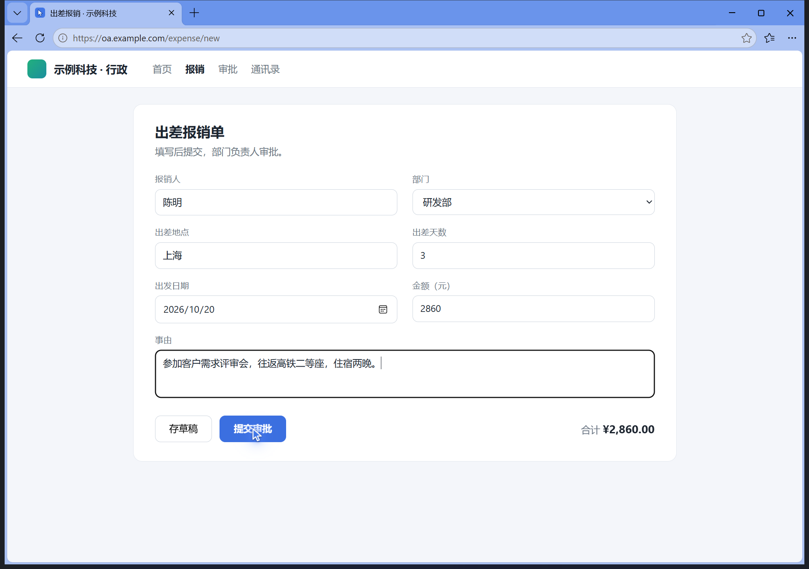
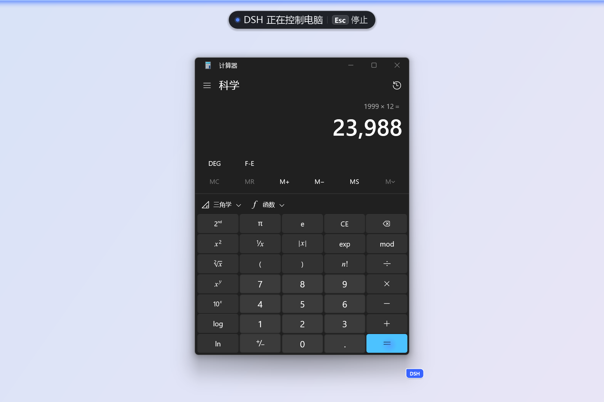
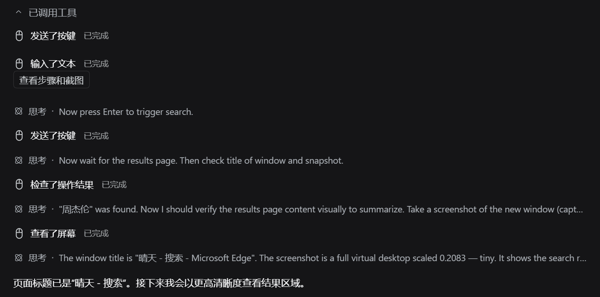
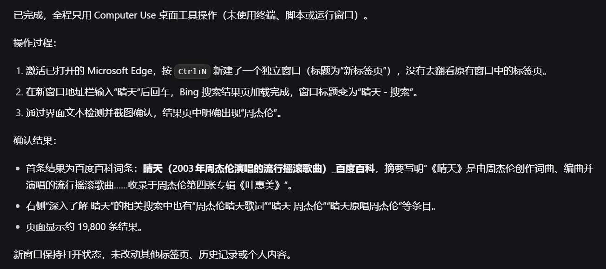
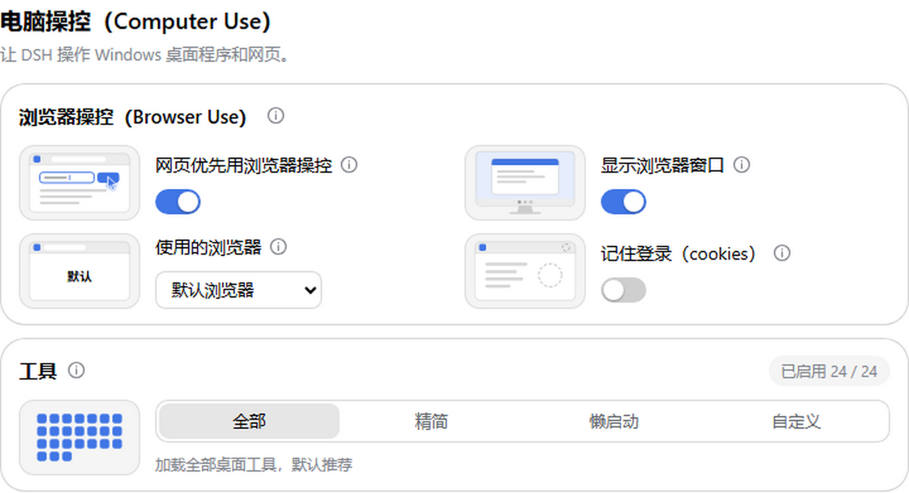

桌面程序和网页，一句话交给它
Let the DSH agent work your Windows apps and web pages


先看清界面，再点击、输入、核对，最后告诉你结果
Ask in DSH: it reads the screen, acts, checks the result and reports back
DSH 用自己的浏览器窗口读写网页，你可以照常做别的事
Browser Use: pages are read and filled in a separate DSH browser, in the background
用到鼠标键盘时，屏幕会亮起提示；按 Esc 立刻停
Desktop apps too, with a clear on-screen indicator and Esc to stop
用到鼠标键盘时，屏幕顶端出现提示条，边缘发光
鼠标旁带着 DSH 标签，一眼看出是谁在动
对话里记下每个动作和截图，做完把结果告诉你
Every action is recorded in the chat with screenshots, then summed up


网页优先、显示窗口、选浏览器、记住登录、工具多少，都在一页设置里
One settings page: Browser Use, which browser, kept sign-ins, tools
